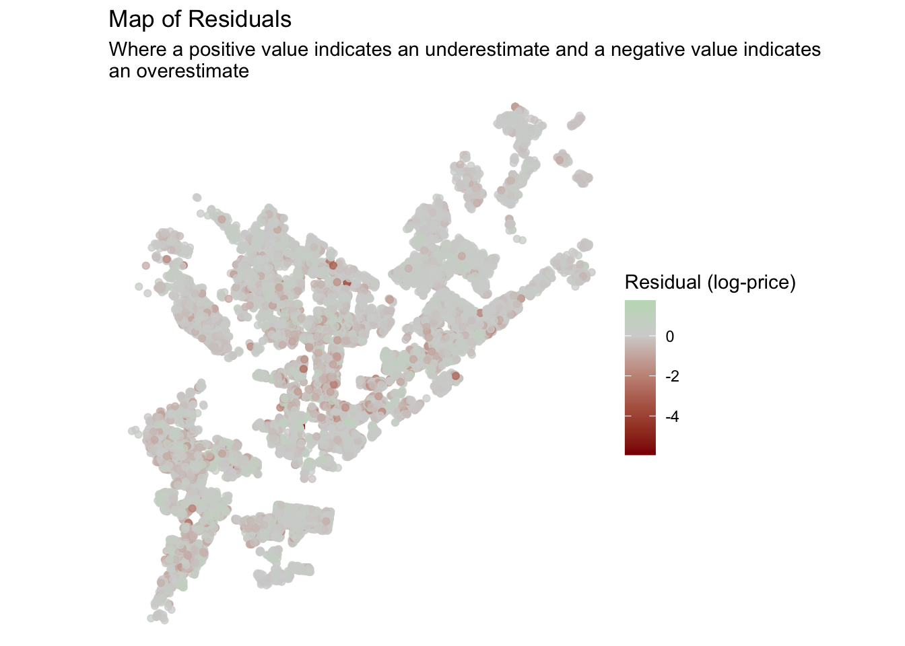

Reading layer `opa_properties_public' from data source
`https://github.com/MUSA-5080-Fall-2025/MUSA-5080-Fall-2025/releases/download/v1.0.0/opa_properties_public.csv'
using driver `CSV'
Warning: no simple feature geometries present: returning a data.frame or tbl_df
# Make Summary tables showing before and after data cleaningbefore_summary <-tibble( Summary ="Raw data", Rows =nrow(property_sales), Columns =ncol(property_sales) )after_summary <-tibble( Summary ="Cleaned data", Rows =nrow(property_sales_res), Columns =ncol(property_sales_res) )# Combine into one summary tablesummary_table <-bind_rows(before_summary, after_summary)
# A tibble: 2 × 3
Summary Rows Columns
<chr> <int> <int>
1 Raw data 583776 79
2 Cleaned data 27357 80
Data Cleaning Narrative:
The dataset initially had 583,776 properties. First we filtered properties based on their zoning code, only keeping those which were residential or ‘IRMX,’ meaning Industrial Residential Mixed Use. #Then to further ensure that we had only residential entries, we filtered for entries that had a category code of single family, multi family, or mixed use. To remove any egregious outliers we removed properties whose sale price was less than $5000 or greater than $10000000. Finally, we only kept sales that occurred in 2023 or 2024. Blank cells were recoded as ’NA.’The cleaned dataset had 27357 lines.
Reading layer `Bike_Network' from data source
`https://hub.arcgis.com/api/v3/datasets/b5f660b9f0f44ced915995b6d49f6385_0/downloads/data?format=geojson&spatialRefId=4326&where=1%3D1'
using driver `GeoJSON'
Simple feature collection with 5225 features and 8 fields
Geometry type: LINESTRING
Dimension: XY
Bounding box: xmin: -75.26927 ymin: 39.87528 xmax: -74.96572 ymax: 40.124
Geodetic CRS: WGS 84
Transform data to sf objects, and match all CRS
Code
st_crs(property_sales_res)
Coordinate Reference System: NA
Code
property_sales_res$geometry <-st_as_sfc(property_sales_res$shape) res_properties_sf <-st_sf(property_sales_res)# Transform CRS for Spatial Amenities - to match that of the property sales datapark_properties <-st_transform(park_properties, st_crs(res_properties_sf)) hospitals <-st_transform(hospitals, st_crs(res_properties_sf)) farmers_markets <-st_transform(farmers_markets, st_crs(res_properties_sf)) schools <-st_transform(schools, st_crs(res_properties_sf)) landmarks <-st_transform(landmarks, st_crs(res_properties_sf)) bike_network <-st_transform(bike_network, st_crs(res_properties_sf))# Transform census data CRS - to match that of the property sales datast_crs(philadelphia)
Coordinate Reference System:
User input: NAD83
wkt:
GEOGCRS["NAD83",
DATUM["North American Datum 1983",
ELLIPSOID["GRS 1980",6378137,298.257222101,
LENGTHUNIT["metre",1]]],
PRIMEM["Greenwich",0,
ANGLEUNIT["degree",0.0174532925199433]],
CS[ellipsoidal,2],
AXIS["latitude",north,
ORDER[1],
ANGLEUNIT["degree",0.0174532925199433]],
AXIS["longitude",east,
ORDER[2],
ANGLEUNIT["degree",0.0174532925199433]],
ID["EPSG",4269]]
Code
philadelphia <-st_transform(philadelphia, st_crs(res_properties_sf))
Join census data to property sales data
Code
philadelphia <- philadelphia %>%mutate(census_tract =as.numeric(str_extract(NAME, "(?<=Census Tract )\\d+(\\.\\d+)?")))res_properties_sf <-st_join(res_properties_sf, philadelphia %>%select(median_h_incomeE, total_populationE), left =TRUE)
Join Spatial Amenities Data
Code
#1 Join parks data - What is the distance to the nearest park?**# Note that some of the parks are super tiny! It also includes playgrounds and rec centers, etc# Calculate distance matrix (properties to parks)dist_matrix_parks <-st_distance(res_properties_sf, park_properties)# Function to get mean distance to k nearest neighborspark_distance <-function(dist_matrix_parks, k) {apply(dist_matrix_parks, 1, function(distances) { # Sort distances and take the first k, then averagemean(as.numeric(sort(distances)[1:k])) })}# Add nearest park distance as a columnres_properties_sf <- res_properties_sf %>%mutate( nearest_park =park_distance(dist_matrix_parks, k =1))#2 Join hospitals data - What is the distance to the nearest hospital?# Calculate distance matrix (properties to hospitals)dist_matrix_hospitals <-st_distance(res_properties_sf, hospitals)# Function to get mean distance to k nearest neighborshosp_distance <-function(dist_matrix_hospitals, k) {apply(dist_matrix_hospitals, 1, function(distances) {# Sort distances, take the nearest k, then calculate the averagemean(as.numeric(sort(distances)[1:k])) })}# Add nearest hospital distance as a columnres_properties_sf <- res_properties_sf %>%mutate( nearest_hospital =hosp_distance(dist_matrix_hospitals, k =1))#hospital distance in miles res_properties_sf <- res_properties_sf %>%mutate( nearest_hospital_mi = nearest_hospital/5280 )#3 Join farmers market data - what is the distance to the nearest farmers market?# Calculate distance matrix (properties to farmers markets)dist_matrix_market <-st_distance(res_properties_sf, farmers_markets)# Function to get nearest distancemarket_distance <-function(dist_matrix_market, k) {apply(dist_matrix_market, 1, function(distances) {# Sort and take first k, then averagemean(as.numeric(sort(distances)[1:k])) })}# Add nearest farmer's market distance as a columnres_properties_sf <- res_properties_sf %>%mutate(nearest_fmarket =market_distance(dist_matrix_market, k =1))# market distance in milesres_properties_sf <- res_properties_sf %>%mutate(nearest_fmarket_mi = nearest_fmarket/5280)#4 Join landmark data - what is the distance to the nearest landmark?# Calculate distance matrix (properties to landmarks)dist_matrix_landmark <-st_distance(res_properties_sf, landmarks)# Function to get nearest distancelandmark_distance <-function(dist_matrix_landmark, k) {apply(dist_matrix_landmark, 1, function(distances) {# Sort distances, take the nearest k, then calculate their meanmean(as.numeric(sort(distances)[1:k])) })}# Add nearest landmark distance as a columnres_properties_sf <- res_properties_sf %>%mutate( nearest_landmark =landmark_distance(dist_matrix_landmark, k =1))# landmark distance in milesres_properties_sf <- res_properties_sf %>%mutate( nearest_landmark_mi = nearest_landmark/5280 )#5 Join school data - what is the distance to the nearest school?# Calculate distance matrix (properties to schools)dist_matrix_school <-st_distance(res_properties_sf, schools)# Function to get nearest distanceschool_distance <-function(dist_matrix_school, k) {apply(dist_matrix_school, 1, function(distances) {# Sort and take first k, then averagemean(as.numeric(sort(distances)[1:k])) })}# Add nearest farmer's market distance as a columnres_properties_sf <- res_properties_sf %>%mutate( nearest_school =school_distance(dist_matrix_school, k =1))# market distance in milesres_properties_sf <- res_properties_sf %>%mutate( nearest_school_mi = nearest_school/5280 )
PHASE 2: EXPLORATORY DATA ANALYSIS - DATA VISUALIZATIONS
#1 Geographic Distribution (Map)
Code
res_properties_sf <- res_properties_sf %>%mutate(sale_price_n =as.numeric(sale_price_n))# Map of Sale Pricesggplot(res_properties_sf) +geom_sf(aes(color = sale_price_n), size =1, alpha =0.7) +scale_color_viridis_c(option ="turbo", labels = scales::dollar) +labs( title ="Distribution of Sale Prices in Philadelphia", color ="Home Price" ) +theme_minimal()
Interpretation:
This map visualizes residential property sales across Philadelphia during 2023–2024, with each point representing a single sale and color indicating the sale price. The full range of values is very hard to see on this map because while there is a large range of values, going beyond $8 million, most of them fall on the much lower end of the spectrum. This causes the map to appear mostly one uniform shade of navy blue. A number of higher valued properties (shown in light blue and representing homes just under $2 million) can be seen clustered in northwest Philadelphia and around center city.
Map of Sale Prices - Log Transformed
Code
ggplot() +geom_sf(data = philadelphia, fill ="gray95", color ="white") +geom_sf(data = res_properties_sf, aes(color =log10(sale_price_n)), size =1.5, alpha =0.7) +scale_color_viridis_c( option ="plasma", labels =function(x) dollar(10^x), name ="Sale Price (log scale)" ) +labs( title ="Residential Property Sale Prices in Philadelphia", subtitle ="Log-scaled price visualization", caption ="Data: Property Sales from 2023, 2024" ) +theme_minimal()
Interpretation:
This map visualizes residential property sales across Philadelphia during 2023–2024, with each point representing a single sale and color indicating the sale price on a logarithmic scale. Using a log scale allows for clearer visualization of the wide range of property values, compressing extremely high prices while preserving overall spatial variation. The pattern reveals clear geographic differences in housing markets: higher sale prices (yellow to orange) are concentrated in central and northwestern neighborhoods—such as Center City, University City, and Chestnut Hill—while lower prices (purple) are more common in much of North and Southwest Philadelphia. These spatial patterns highlight the city’s pronounced housing value disparities, reflecting broader socioeconomic divides. They also show potential gentrification pressures in the areas where low- and mid-priced neighborhoods intersect.
#2 Distribution of Sale Prices (Histogram)
Code
ggplot(res_properties_sf, aes(x = sale_price_n)) +geom_histogram(bins =40, fill ="steelblue", color ="white", alpha =0.8) +scale_x_continuous(labels = scales::dollar) +labs( title ="Distribution of Residential Sale Prices in Philadelphia", subtitle ="Data from 2023, 2024", x ="Sale Price (USD)", y ="Number of Properties" ) +theme_minimal()
Interpretation:
This histogram illustrates the distribution of residential property sale prices in Philadelphia for the years 2023–2024. The data are highly right-skewed, meaning most properties sold at relatively low prices, while a small number of transactions occurred at very high prices. The vast majority of sales cluster below about $500,000, with a sharp peak near the lower end of the price range. Only a few properties sold for prices above $1 million, indicating that such high-value transactions are rare.
Sale Prices Histogram - Log Transformed
Code
ggplot(res_properties_sf, aes(x = sale_price_n)) +geom_histogram(bins =40, fill ="darkorange", color ="white", alpha =0.8) +scale_x_log10(labels = dollar) +labs( title ="Residential Sale Prices in Philadelphia (Log Scale)", subtitle ="Data from 2023, 2024", x ="Sale Price (log10 USD)", y ="Number of Properties" ) +theme_minimal()
Interpretation:
This histogram displays the distribution of residential sale prices in Philadelphia (2023–2024) on a logarithmic scale, which makes the skewed price data easier to interpret. The distribution appears roughly bell-shaped, indicating that the underlying price data follow a log-normal distribution. Most residential properties sold for between $100,000 and $1,000,000, forming the central peak of the distribution. Fewer homes sold at very low or very high prices, shown by the tapering tails on both sides.
#3 Price vs. Structural Features - Scatter Plot Price vs. Number of Bedrooms
Code
res_properties_sf <- res_properties_sf %>%mutate(number_of_bedrooms =as.numeric(number_of_bedrooms))ggplot( data = res_properties_sf %>%filter(!is.na(number_of_bedrooms)), aes(x = number_of_bedrooms, y = sale_price_n) ) +geom_point(color ="steelblue", alpha =0.6, size =2) +geom_smooth(method ="lm", color ="darkorange", se =TRUE) +scale_y_continuous(labels = scales::dollar) +labs( title ="Residential Sale Prices by Number of Bedrooms", subtitle ="Data from 2023, 2024 Philadelphia", x ="Number of Bedrooms", y ="Sale Price (USD)" ) +theme_minimal()
`geom_smooth()` using formula = 'y ~ x'
Interpretation:
The scatter plot shows the relationship between the number of bedrooms in residential properties and their sale prices in Philadelphia for 2023 and 2024. The trend line does indicate a general upward trajectory, suggesting that sale prices tend to increase as the number of bedrooms increases. At the same time, the data shows a wide range of sale prices within each bedroom category, indicating that other factors such as neighborhood location, property condition, amenities, and lot size also have a large influence on overall value. In each bedroom category, most of the properties are valued below $2,000,000. There are also many high outliers in each category, meaning that for luxury properties the number of bedrooms is not highly associated with the value. Also, beyond 6 bedrooms, the sale prices begin to taper off, suggesting that at that point additional bedrooms have a diminishing return.
#4 Price vs. Spatial Features - Scatter Plot
Price vs. Distance to Nearest Farmer’s Market
Code
ggplot( data = res_properties_sf, aes(x = nearest_fmarket_mi, y = sale_price_n) ) +geom_point(color ="steelblue", alpha =0.6, size =2) +scale_y_continuous(labels = scales::dollar) +labs( title ="Residential Sale Prices by Nearest Market", subtitle ="Data from 2023, 2024 Philadelphia", x ="Distance to Nearest Farmer's Market, Miles", y ="Sale Price (USD)" ) +theme_minimal()
Interpretation:
The scatter plot shows the relationship between the distance to the nearest farmers’ market and the sale price. The highest valued properties are clustered within 1 mile from a market. Beyond 2 miles, the values fall sharply. This suggests that proximity to farmers markets does to some degree play a role in sale value. However, it is almost important to note that there is a very wide range or properties within 1 mile. Overall this graphic is most revealing about the proximity of high end properties to farmers markets.
#5 Creative Visualization: Choropleth Map of Median Prices and Median Income
This is a bivariate choropleth map of median home values and median income by census tract in Philadelphia. Median home values and median income were broken into tertiles. This shows that high-income, high-price areas are highly clustered in northwest Philadelphia, but also close to center city, university city, and in parts of the northeast. Low-income, low-price areas are found in the west and southwest, the north, and the northeast. These would indicate underfunded areas. The low-income, high price areas could represent areas that are quickly gentrifying. Low income residents here are at risked of getting pushed out of these neighborhoods.
PHASE 3: FEATURE ENGINEERING
Price per Bedroom:
This measures to what extent a property becomes more valuable based on the number of bedrooms it has.
This feature divides the sale price by the median household income of the census tract it is in. A lower ratio would indicate more affordable housing in the given tract, while a higher ratio would indicate more expensive housing.
This feature divides the tract’s median household income by the sale price. A lower score would indicate the housing is more affordable, while a higher score would mean the property is less affordable.
This feature creates one general score to indicate access to multiple valuable amenities including parks, hospitals, farmers markets, landmarks, and schools.A higher score indicates better access.
These features use buffers to determine the number of amenities within a half mile buffer of each property. The amenities considered are again parks, schools, farmers markets, hospitals, and landmarks.
Warning: There was 1 warning in `dplyr::summarize()`.
ℹ In argument: `dplyr::across(tidyselect::any_of(variable_names),
mangled_skimmers$funs)`.
ℹ In group 0: .
Caused by warning:
! There was 1 warning in `dplyr::summarize()`.
ℹ In argument: `dplyr::across(tidyselect::any_of(variable_names),
mangled_skimmers$funs)`.
Caused by warning in `inline_hist()`:
! Variable contains Inf or -Inf value(s) that were converted to NA.
Data summary
Name
Piped data
Number of rows
27357
Number of columns
14
_______________________
Column type frequency:
numeric
14
________________________
Group variables
None
Variable type: numeric
skim_variable
n_missing
complete_rate
mean
sd
p0
p25
p50
p75
p100
hist
price_per_bedroom
232
0.99
Inf
NaN
1428.57
53333.33
86666.67
140000.00
Inf
▇▁▁▁▁
price_to_income
316
0.99
5.47
11.30
0.09
2.71
3.88
5.44
283.08
▇▁▁▁▁
affordability
316
0.99
0.34
0.41
0.00
0.18
0.26
0.37
11.07
▇▁▁▁▁
nearest_park_mi
0
1.00
0.16
0.12
0.00
0.07
0.14
0.22
0.99
▇▃▁▁▁
nearest_hospital_mi
0
1.00
0.99
0.67
0.01
0.53
0.84
1.27
4.90
▇▅▁▁▁
nearest_fmarket_mi
0
1.00
1.35
1.36
0.01
0.49
0.92
1.65
7.48
▇▂▁▁▁
nearest_landmark_mi
0
1.00
0.27
0.16
0.00
0.15
0.25
0.37
1.37
▇▆▁▁▁
nearest_school_mi
0
1.00
0.22
0.13
0.01
0.13
0.20
0.28
1.09
▇▅▁▁▁
access_index
0
1.00
29.04
24.82
3.81
16.48
22.79
33.08
781.52
▇▁▁▁▁
n_parks_near
0
1.00
5.43
3.96
0.00
3.00
5.00
7.00
27.00
▇▃▁▁▁
n_schools_near
0
1.00
4.56
2.94
0.00
2.00
4.00
6.00
17.00
▇▆▃▁▁
n_fmarkets_near
0
1.00
0.35
0.70
0.00
0.00
0.00
1.00
4.00
▇▂▁▁▁
n_hospitals_near
0
1.00
0.31
0.65
0.00
0.00
0.00
0.00
4.00
▇▂▁▁▁
n_landmarks_near
0
1.00
5.93
10.43
0.00
1.00
3.00
5.00
80.00
▇▁▁▁▁
PHASE 4: MODEL BUILDING
Further data cleaning
Code
# convert variables to numeric for laterres_properties_sf <- res_properties_sf %>%mutate(total_livable_area =as.numeric(total_livable_area), number_of_bathrooms =as.numeric(number_of_bathrooms), frontage =as.numeric(frontage),fireplaces =as.numeric(fireplaces), year_built =as.numeric(year_built) )#create categorical variablesres_properties_sf$quality_grade <-as.factor(res_properties_sf$quality_grade)res_properties_sf$category_code <-as.factor(res_properties_sf$category_code)# log to reduce skew - compresses large values to make more symmetricalres_properties_sf <- res_properties_sf %>%mutate(log_price =log(sale_price_n))
We built our each model with progressively more features in the following categories along with our hypotheses about their interaction with the dependent variable:
Structural features: These features came from the property sales data, and thus each sale has a unique value for the following variables:
Number of bedrooms and bathrooms: Higher numbers tends to increase price
Total livable area: More livable area tends to increase price
Fireplaces: More fireplaces tends to be associated with luxury and thus price
Census features: These features come from the ACS and are aggregated at the tract level, so each sale may share values with other sales:
Median Household Income: Higher income areas more likely to afford higher priced properties
Total Population: Higher density areas could have more market competition and thus lower prices
Price to Income: Computed ratio of sale price to median income, approximating housing affordability
Spatial features: These features were created by comparing city features to locations of property sales, so each sale has a unique value:
Nearest Park: A low number and thus a close park may increase property value
Nearest Hospital: A low number and thus close hospital may increase property value
Nearest Farmer’s Market: Another feature thats nearness may increase value
Nearest Landmark: Nearness to landmark could be desirable feature of high value property
Nearest School: Nearness to school may increase property value
Number of Parks Near: A higher number of parks within .5 mi may increase property value
Number of Hospitals Near: Higher number increase property value
Number of Landmarks Near: Higher number increase property value
Number of Farmer’s Markets Near: Higher number increase property value
Number of Schools Near: Higher number increase property value
Access Index: This incorporates all above features into one score where a higher number indicates higher access to many types of public features and thus may increase property value
Fixed Effects & Interaction terms:
Total Livable Area x Median Household Income: More space in a higher income area could increase property value even more than either variable alone
Year Built x Median Household Income: An old home in a higher income area may indicate historically significant, high value property rather than ‘outdated’ and thus lower value
Category Code: 1 = Single Family Home, 2 = Multi-Family, 3 = “Mixed Use”. This fixed effect should represent the amount of space per household family member and also account for current cultural preferance for single family homes over shared spaces
The Stargazer output sheds some light on the most important variables:
Positive Coefficients: An increase in units of these is associated with an increase in property sale value to a very high degree of confidence (p-value of less than 2e-16):
number_of_bathrooms
total_livable_area
median_h_incomeE
year_built
price_to_income
nearest_fmarket_mi (although here a high value is associated with farther distance from a farmer’s market)
n_fmarkets_near (oddly, seeing as farther distance form farmer’s marker is modeled as depressing value, here higher number of close farmer’s markets is positively associated with value)
n_hospitals_near
Negative Coefficients: An increase in units of these is associated with a decrease in property sale value to a very high degree of confidence (p-value of less than 2e-16):
n_schools_near
category_code2 (multi-family housing as compared to single family housing depressed property sale value)
How Well do Four Models Explain Variance of Property Sale Data?
RMSE
R-Squared
MAE
Model Name
0.7347832
0.2416805
0.5240245
Structural Model
0.5267767
0.6094667
0.3712585
Structural + Census Model
0.5168419
0.6245888
0.3603925
Structural + Census + Spatial Model
0.5126536
0.6293106
0.3531167
Structural + Census + Spatial + Fixed Effects & Interactions Model
Code
#plot fit vs residuals#### resid.1<-data.frame( fitted =fitted(cv.mod.1$finalModel),residuals =resid(cv.mod.1$finalModel) )ggplot(resid.1, aes(x = fitted, y = residuals)) +geom_point() +geom_hline(yintercept =0, color ="red", linetype ="dashed") +labs(title ="Residual Plot", x ="Fitted Values", y ="Residuals") +theme_minimal()
Code
resid.2<-data.frame( fitted =fitted(cv.mod.2$finalModel),residuals =resid(cv.mod.2$finalModel) )ggplot(resid.2, aes(x = fitted, y = residuals)) +geom_point() +geom_hline(yintercept =0, color ="red", linetype ="dashed") +labs(title ="Residual Plot", x ="Fitted Values", y ="Residuals") +theme_minimal()
Code
resid.3<-data.frame( fitted =fitted(cv.mod.3$finalModel),residuals =resid(cv.mod.3$finalModel) )ggplot(resid.3, aes(x = fitted, y = residuals)) +geom_point() +geom_hline(yintercept =0, color ="red", linetype ="dashed") +labs(title ="Residual Plot", x ="Fitted Values", y ="Residuals") +theme_minimal()
Code
resid.4<-data.frame( fitted =fitted(cv.mod.4$finalModel),residuals =resid(cv.mod.4$finalModel) )ggplot(resid.4, aes(x = fitted, y = residuals)) +geom_point() +geom_hline(yintercept =0, color ="red", linetype ="dashed") +labs(title ="Residual Plot", x ="Fitted Values", y ="Residuals") +theme_minimal()

Code
preds <-predict(cv.mod.4, newdata = res_properties_sf)res_properties_sf$fitted <-NA_real_res_properties_sf$residuals <-NA_real_res_properties_sf$fitted[as.numeric(names(preds))] <- predsres_properties_sf$residuals[as.numeric(names(preds))] <-res_properties_sf$log_price[as.numeric(names(preds))] - predsres_properties_sf%>%filter(!is.na(residuals))%>%ggplot() +geom_sf(aes(color = residuals), alpha=.75)+scale_color_gradient2( low ="darkred", mid ="lightgray", high ="lightgreen", midpoint =0, name ="Residual (log-price)")+labs(title ="Map of Residuals",subtitle =str_wrap("Where a positive value indicates an underestimate and a negative value indicates an overestimate"))+theme_void()
This Map shows the locations of over and underestimates produced by our model. There is a relatively even spread of high absolute value estimates, but overestimates are visually bunched in North Central Philadelphia, and underestimates are clustered in North East and North West, West, and South Philadelphia. This shows that our model could have benefited from a fixed effect accounting for the sector or neighborhood in estimating price, seeing as the areas underestimated are generally considered the wealthier more desirable areas of Philadelphia, and the overestimated areas are generally considered less desirable areas, where reputation may have more influence over property sale price than amenities, structural features, density, income, and affordability.
PHASE 6: MODEL DIAGNOSTICS
Code
par(mfrow =c(1, 3))plot(cv.mod.4$finalModel, which =1) # Residuals vs Fitted plot(cv.mod.4$finalModel, which =2) # Q-Q plot(cv.mod.4$finalModel, which =4) # Cook's distance
Interpretation:
Residual vs Fitted
This plot shows a down-turned curve, indicating heteroscedasticity, or in other words that the lower and higher end of predictions were more often overestimates. The plot indicates our model could further benefit from quadratic terms. There are also potential extreme outliers that could be removed.
QQPlot
This plot indicates the distribution of residuals has very a very long left tail. This indicates that the overestimates are more extreme than a normal distribution would have, again with a cluster of extreme outliers.
Cook’s distance
This plot indeed confirms that there are a handful of extreme outliers that are exerting outsize leverage on the model such as observations X2600 and X12295
In future models, we should not only remove extremely high values (we put a cap at max $10M property sale values) but also we should filter out extremely low property sale values, as they appear to have leverage over the model. We could also investigate if there are terms that should be quadratic given the curved Residual v Fitted plot.
PHASE 7: CONCLUSIONS & RECOMMENDATIONS
What is your final model’s accuracy?
Our final model explains 62% of the variance in the data.
Which features matter most for Philadelphia prices?
The features that matter the are features such as area, bathrooms, year built, affordability and also interactions between median income, year built, and livable area. The city amenities that matter most for sale price are farmer’s markets, hospitals, and shcools, but less so parks and landmarks. An important fixed effect is the designation of single family home or multi family home, with multi family home exerting a negative effect on sale price compared to single family homes
Which neighborhoods are hardest to predict?
North Central Philadelphia exhibited the highest concentration of overestimated home values, and this could be because the stigma associated with North Central Philadelphia causes other factors that normally increase a home value to have less effect.
Equity concerns?
Given the consistent over-estimation of sale price values in North Central Philadelphia, caution must be exerted in presenting this information. Our map showing income brackets and sale price brackets compared show that North Central has a large concentration of low income and low sale price properties, and thus the inacuracy of predicting the property values in this area could induce overburdening taxes on an already financially burdened area of the city.
Limitations?
Our model’s limitations lie in the outsize influence that a few low sale price properties holds on the model as well as the spatial correlation to under and over estimates. This strongly indicates that accounting for Phidelphia neighborhoods or regions through a fixed effect variable should be considered for further modeling, as this seems like a factor that in many cases matters more than the structural, affordability, or amenity features.